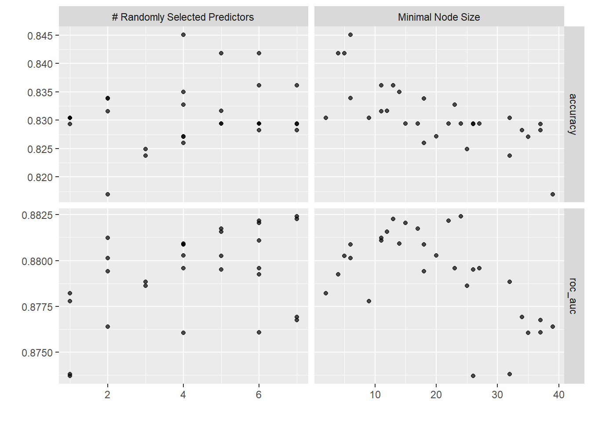

library(tidyverse)
library(tidymodels)
library(conflicted)
conflicts_prefer(dplyr::filter())
conflicts_prefer(dplyr::lag())
conflicts_prefer(recipes::step())Titanic
Machine Learning from Disaster
Use machine learning to create a model that predicts which passengers survived the Titanic shipwreck.
Background
The sinking of the Titanic is one of the most infamous shipwrecks in history.
On April 15, 1912, during her maiden voyage, the widely considered “unsinkable” RMS Titanic sank after colliding with an iceberg.
Unfortunately, there weren’t enough lifeboats for everyone onboard, resulting in the death of 1502 out of 2224 passengers and crew.
While there was some element of luck involved in surviving, it seems some groups of people were more likely to survive than others.
Challenge
Build a predictive model that answers the question: “what sorts of people were more likely to survive?” using passenger data.
Set Environment
Read Data
titanic_train <- read.csv("./titanic_train.csv")
titanic_test <- read.csv("./titanic_test.csv")
titanic_data <- bind_rows(
list("train"=titanic_train, "test"=titanic_test),
.id = "From"
)
glimpse(titanic_data)Rows: 1,309
Columns: 13
$ From <chr> "train", "train", "train", "train", "train", "train", "tra…
$ PassengerId <int> 1, 2, 3, 4, 5, 6, 7, 8, 9, 10, 11, 12, 13, 14, 15, 16, 17,…
$ Survived <int> 0, 1, 1, 1, 0, 0, 0, 0, 1, 1, 1, 1, 0, 0, 0, 1, 0, 1, 0, 1…
$ Pclass <int> 3, 1, 3, 1, 3, 3, 1, 3, 3, 2, 3, 1, 3, 3, 3, 2, 3, 2, 3, 3…
$ Name <chr> "Braund, Mr. Owen Harris", "Cumings, Mrs. John Bradley (Fl…
$ Sex <chr> "male", "female", "female", "female", "male", "male", "mal…
$ Age <dbl> 22, 38, 26, 35, 35, NA, 54, 2, 27, 14, 4, 58, 20, 39, 14, …
$ SibSp <int> 1, 1, 0, 1, 0, 0, 0, 3, 0, 1, 1, 0, 0, 1, 0, 0, 4, 0, 1, 0…
$ Parch <int> 0, 0, 0, 0, 0, 0, 0, 1, 2, 0, 1, 0, 0, 5, 0, 0, 1, 0, 0, 0…
$ Ticket <chr> "A/5 21171", "PC 17599", "STON/O2. 3101282", "113803", "37…
$ Fare <dbl> 7.2500, 71.2833, 7.9250, 53.1000, 8.0500, 8.4583, 51.8625,…
$ Cabin <chr> "", "C85", "", "C123", "", "", "E46", "", "", "", "G6", "C…
$ Embarked <chr> "S", "C", "S", "S", "S", "Q", "S", "S", "S", "C", "S", "S"…Convert Data
titanic_data[titanic_data==""] <- NA
titanic_data <- titanic_data |>
mutate(
Survived=as.factor(Survived),
Survived=fct_rev(Survived),
Pclass=as.factor(Pclass),
Sex=as.factor(Sex),
Sex=fct_rev(Sex),
Family=SibSp + Parch + 1,
Ticket=as.factor(Ticket),
Embarked=as.factor(Embarked)
) |> group_by(Ticket) |>
mutate(
Group=n(),
Fare=round(Fare/Group, 4)
) |> ungroup()
glimpse(titanic_data)Rows: 1,309
Columns: 15
$ From <chr> "train", "train", "train", "train", "train", "train", "tra…
$ PassengerId <int> 1, 2, 3, 4, 5, 6, 7, 8, 9, 10, 11, 12, 13, 14, 15, 16, 17,…
$ Survived <fct> 0, 1, 1, 1, 0, 0, 0, 0, 1, 1, 1, 1, 0, 0, 0, 1, 0, 1, 0, 1…
$ Pclass <fct> 3, 1, 3, 1, 3, 3, 1, 3, 3, 2, 3, 1, 3, 3, 3, 2, 3, 2, 3, 3…
$ Name <chr> "Braund, Mr. Owen Harris", "Cumings, Mrs. John Bradley (Fl…
$ Sex <fct> male, female, female, female, male, male, male, male, fema…
$ Age <dbl> 22, 38, 26, 35, 35, NA, 54, 2, 27, 14, 4, 58, 20, 39, 14, …
$ SibSp <int> 1, 1, 0, 1, 0, 0, 0, 3, 0, 1, 1, 0, 0, 1, 0, 0, 4, 0, 1, 0…
$ Parch <int> 0, 0, 0, 0, 0, 0, 0, 1, 2, 0, 1, 0, 0, 5, 0, 0, 1, 0, 0, 0…
$ Ticket <fct> A/5 21171, PC 17599, STON/O2. 3101282, 113803, 373450, 330…
$ Fare <dbl> 7.2500, 35.6416, 7.9250, 26.5500, 8.0500, 8.4583, 25.9312,…
$ Cabin <chr> NA, "C85", NA, "C123", NA, NA, "E46", NA, NA, NA, "G6", "C…
$ Embarked <fct> S, C, S, S, S, Q, S, S, S, C, S, S, S, S, S, S, Q, S, S, C…
$ Family <dbl> 2, 2, 1, 2, 1, 1, 1, 5, 3, 2, 3, 1, 1, 7, 1, 1, 6, 1, 2, 1…
$ Group <int> 1, 2, 1, 2, 1, 1, 2, 5, 3, 2, 3, 1, 1, 7, 1, 1, 6, 1, 2, 1…Draw Plot
titanic_train <- titanic_data |>
filter(From=="train") |>
select(-From)
titanic_test <- titanic_data |>
filter(From=="test") |>
select(-From,-Survived)
titanic_train |>
ggplot(aes(x=Age, fill=Sex)) +
geom_histogram(
position = "dodge", binwidth = 10, center = 5
) + theme_bw()
titanic_train |>
ggplot(aes(x=Age, group=Survived, fill=Survived)) +
geom_histogram(
aes(y=after_stat(density)),
position="dodge", binwidth = 10, center = 5
) + theme_bw()
titanic_train |>
ggplot(aes(x=Sex, group=Survived, fill=Survived)) +
geom_bar(aes(y=after_stat(prop)), position="dodge") +
theme_bw()titanic_train |>
ggplot(aes(x=Family, group=Survived, fill=Survived)) +
geom_bar(aes(y=after_stat(prop)), position="dodge") +
theme_bw()
titanic_train |>
ggplot(aes(x=Pclass, group=Survived, fill=Survived)) +
geom_bar(aes(y=after_stat(prop)), position="dodge") +
theme_bw()
titanic_train |>
ggplot(aes(x=Fare, group=Survived, fill=Survived)) +
geom_histogram(
aes(y=after_stat(density)),
position="dodge", binwidth = 25, center = 12.5
) + theme_bw()
titanic_train |>
ggplot(aes(x=Embarked, group=Survived, fill=Survived)) +
geom_bar(aes(y=after_stat(prop)), position="dodge") +
theme_bw()Split Data
train_data <- titanic_train |>
select(
Survived,
Age, Sex, Family,
Pclass, Ticket, Fare, Embarked
)
test_data <- titanic_test |>
select(
Age, Sex, Family,
Pclass, Ticket, Fare, Embarked
)
set.seed(1024)
split_data <- initial_split(train_data)
fold_data <- vfold_cv(train_data, strata=Survived)Create Model
model <- rand_forest(
mtry=tune(), trees=1000, min_n=tune()
) |> set_engine(
"ranger", num.threads=8
) |> set_mode("classification")Create Recipe
recipe <- recipe(Survived ~ ., data=split_data) |>
step_impute_knn(
Age,
impute_with=imp_vars(Sex, Family)
) |>
step_impute_knn(
Fare, Embarked,
impute_with=imp_vars(Pclass, Ticket)
)Create Workflow
workflow <- workflow() |>
add_recipe(recipe) |>
add_model(model)Tune Model
grid <- grid_max_entropy(
finalize(mtry(), test_data),
min_n(),
size=30
)
tune <- workflow |>
tune_grid(
resamples=fold_data,
grid=grid,
metrics=metric_set(accuracy, roc_auc)
)
tune |> autoplot()
tune |> show_best(metric="accuracy")# A tibble: 5 × 8
mtry min_n .metric .estimator mean n std_err .config
<int> <int> <chr> <chr> <dbl> <int> <dbl> <chr>
1 4 6 accuracy binary 0.845 10 0.0199 Preprocessor1_Model20
2 6 4 accuracy binary 0.842 10 0.0194 Preprocessor1_Model25
3 5 5 accuracy binary 0.842 10 0.0178 Preprocessor1_Model15
4 6 11 accuracy binary 0.836 10 0.0179 Preprocessor1_Model24
5 7 13 accuracy binary 0.836 10 0.0174 Preprocessor1_Model09tune |> show_best(metric="roc_auc")# A tibble: 5 × 8
mtry min_n .metric .estimator mean n std_err .config
<int> <int> <chr> <chr> <dbl> <int> <dbl> <chr>
1 7 24 roc_auc binary 0.882 10 0.0169 Preprocessor1_Model22
2 7 13 roc_auc binary 0.882 10 0.0190 Preprocessor1_Model09
3 6 22 roc_auc binary 0.882 10 0.0174 Preprocessor1_Model17
4 6 15 roc_auc binary 0.882 10 0.0183 Preprocessor1_Model10
5 5 17 roc_auc binary 0.882 10 0.0183 Preprocessor1_Model27params <- tune |> select_best(metric="accuracy")
final <- workflow |> finalize_workflow(params)Validate Model
final |> last_fit(split_data) |> collect_metrics()# A tibble: 2 × 4
.metric .estimator .estimate .config
<chr> <chr> <dbl> <chr>
1 accuracy binary 0.834 Preprocessor1_Model1
2 roc_auc binary 0.863 Preprocessor1_Model1Test Model
fit <- final |> fit(train_data)
predict <- fit |> predict(test_data) |>
rename(Survived=.pred_class)
submission <- titanic_test |>
select(PassengerId) |>
bind_cols(predict)
glimpse(submission)Rows: 418
Columns: 2
$ PassengerId <int> 892, 893, 894, 895, 896, 897, 898, 899, 900, 901, 902, 903…
$ Survived <fct> 0, 0, 0, 0, 1, 0, 1, 0, 1, 0, 0, 0, 1, 0, 1, 1, 0, 0, 1, 0…